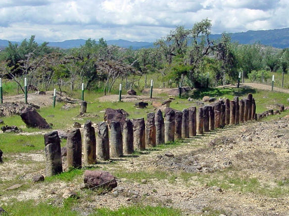

Historia de Villa de Leiva

Época Prehispánica
Antes de la llegada de los españoles, el territorio donde hoy está Villa de Leyva ya era habitado por grupos indígenas, en particular los muiscas, quienes formaban parte de la Confederación Muisca en el altiplano cundiboyacense. En las cercanías se encuentra el sitio arqueológico de El Infiernito, que funcionaba como observatorio astronómico y se relaciona con prácticas rituales y calendáricas indígenas. Estudios recientes sugieren que esos pueblos practicaban agricultura intensiva y habían desarrollado infraestructura hidráulica, así como rutas ceremoniales vinculadas al paisaje sagrado de Iguaque.
Fundación colonial y crecimiento en la colonia
- Villa de Leyva fue oficialmente fundada el 12 de junio de 1572 por el capitán Hernán Suárez de Villalobos bajo la autoridad del presidente de la Real Audiencia, Andrés Díaz Venero de Leyva, con el nombre de Villa de Nuestra Señora de idea era que la villa sirviera como punto de asentamiento para soldados españoles retirados, así como un centro de producción agrícola que abasteciera poblaciones cercanas (especialmente tras las campañas de conquista). En los primeros años hubo movimientos poblacionales: la villa estuvo inicialmente erigida en el valle de Zaquencipá (ubicación indígena) y luego fue trasladada a la posición actual.
Siglo XVIII, independencia y personajes ilustres
Durante el periodo colonial tardío y en los albores del siglo XIX, Villa de Leyva fue escenario de importantes conexiones con la causa independentista. En ella vivieron o pasaron personajes relevantes como Antonio Nariño, quien residió allí en sus últimos meses y murió en una casa ahora convertida en museo local. También es la cuna del héroe Antonio Ricaurte, cuyo museo en la villa conserva elementos históricos de la época independentista. Durante estos siglos se consolidaron edificaciones religiosas y conventos (Agustinos, Dominicos) que hasta hoy forman parte del patrimonio arquitectónico del municipio.
Reconocimiento patrimonial y auge turístico
El valor arquitectónico e histórico de Villa de Leyva llevó a que fuera declarada Monumento Nacional el 17 de diciembre de 1954, con el propósito de preservar su casco colonial intacto. En décadas posteriores, especialmente desde mediados del siglo XX, comenzó un impulso turístico al mejorarse vías de acceso (por ejemplo la carretera Tunja-Chiquinquirá) y desarrollarse hospedajes rurales, museos y actividades culturales.Gracias a esa estrategia, Villa de Leyva se ha convertido en uno de los destinos patrimoniales más visitados del centro de Colombia, integrándose dentro de la red de Pueblos Patrimonio del país.

Paleontología, identidad contemporánea y desafíos
Un rasgo distintivo del entorno de Villa de Leyva es su rica paleontología: el hallazgo del pliosaurio Kronosaurus boyacensis en 1977 motivó la creación del Museo El Fósil y robustas iniciativas de investigación. Igualmente, el Centro de Investigaciones Paleontológicas (CIP) se ha consolidado como un espacio de estudio de fósiles vertebrados y de promoción científica. En el plano cultural actual, Villa de Leyva sigue siendo un escenario fértil para festivales (astronomía, jazz, artes plásticas), producciones audiovisuales de época y turismo consciente que busca balance entre desarrollo y conservación histórica. Sin embargo, enfrenta retos como la presión del turismo sobre su infraestructura, el mantenimiento de sus bienes patrimoniales y la necesidad de impulsar una economía local sostenible que complemente las actividades turísticas.